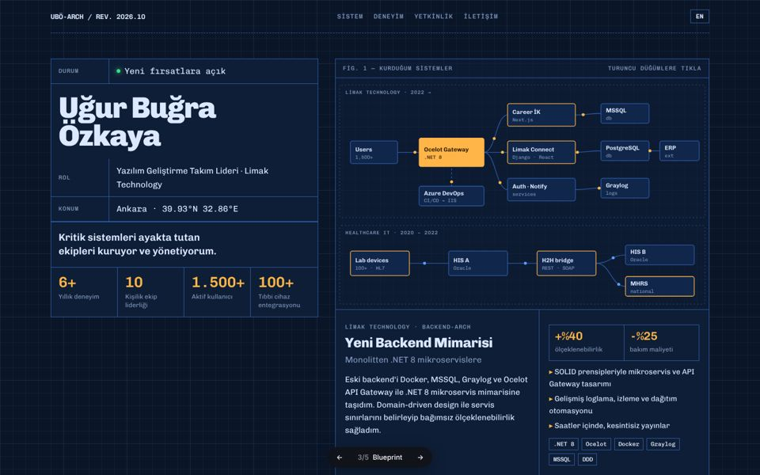
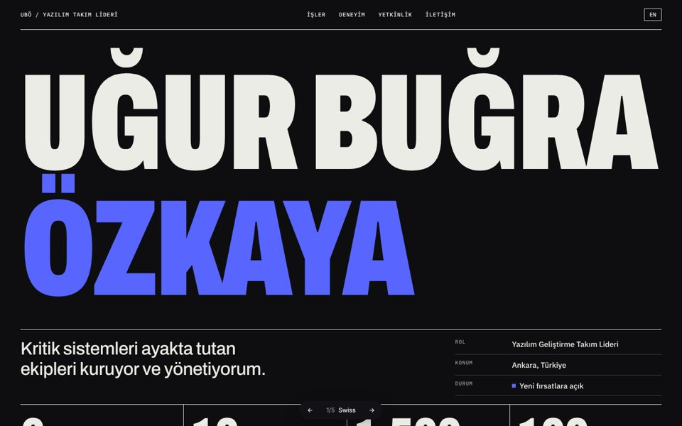
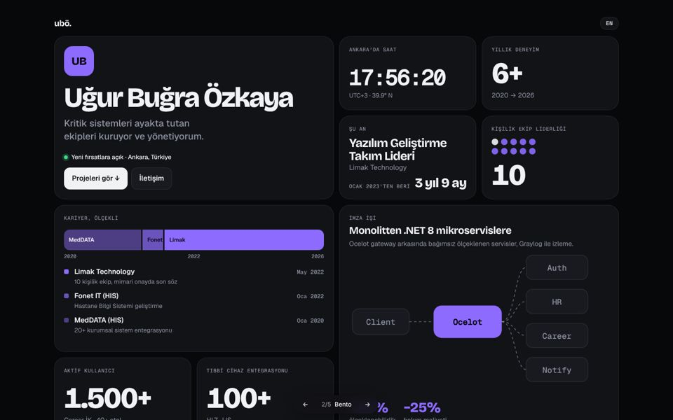
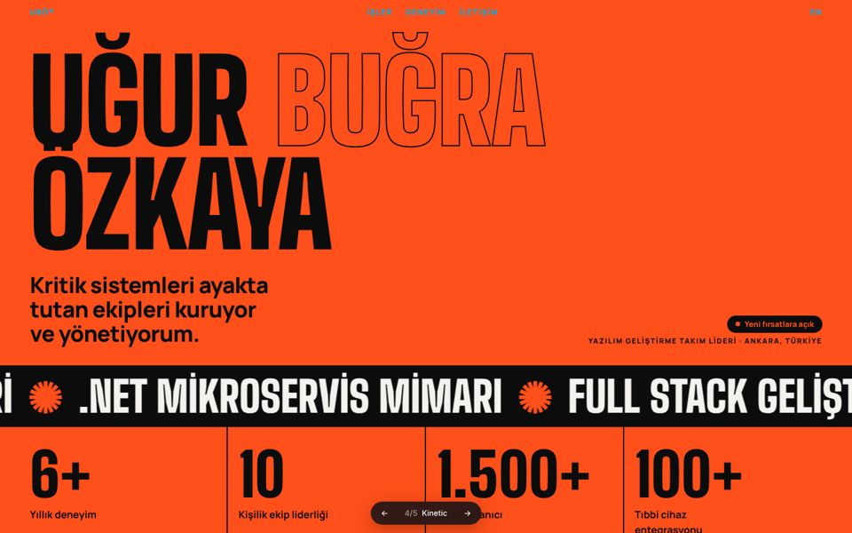
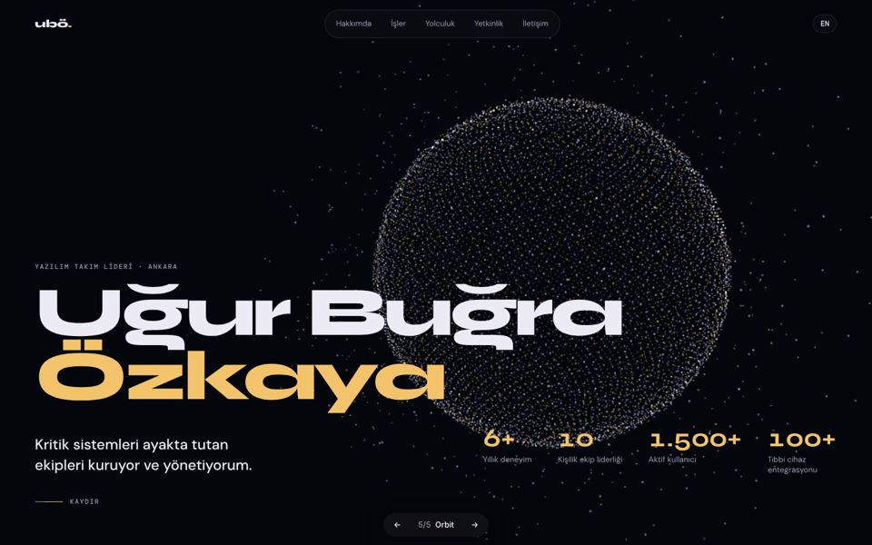

yokbi.github.io · 5 konsept
Hepsi gerçek içeriğinle çalışıyor, TR/EN destekli ve aynı data.js dosyasından besleniyor. Bir karta tıkla, gez; sayfaların altındaki ← → çubuğuyla konseptler arasında geçiş yapabilirsin.

Açılış ekranı, kurduğun sistemlerin canlı bir mimari diyagramı: Ocelot gateway, servisler, veritabanları ve hastane entegrasyonları. Paketler hatlarda akıyor; turuncu düğümlere tıklayınca o projenin vaka çalışması açılıyor. Takım lideri ve mimar profiline en çok yakışan konsept bu.

Ekranı dolduran dev, dar harfli isim, klein mavisi ve sıkı bir 12 kolonlu ızgara. Projeler indeks satırı gibi listeleniyor, tıklayınca yerinde açılıyor.

Her şey tek bir panoda: Ankara'da canlı saat, ölçekli kariyer çubuğu, mikroservis diyagramı, imleci takip eden kenar parlaması.

Turuncu ve siyah, afiş boyutunda harfler, kayan şeritler. Aşağı kaydırdıkça projeler yana doğru akıyor.

Arka planda binlerce WebGL parçacık; her bölümde yeni bir şekle dönüşüyor: küre, galaksi, ağ, sarmal, halka. İçerik cam paneller üzerinde.